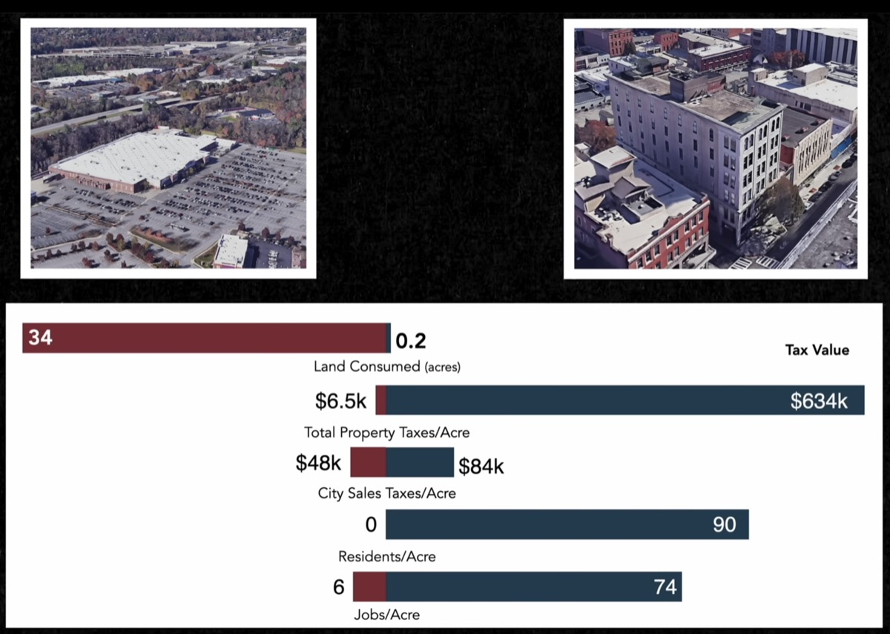
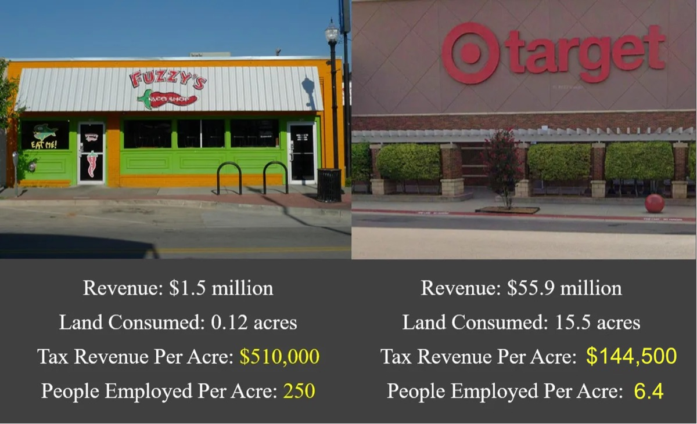
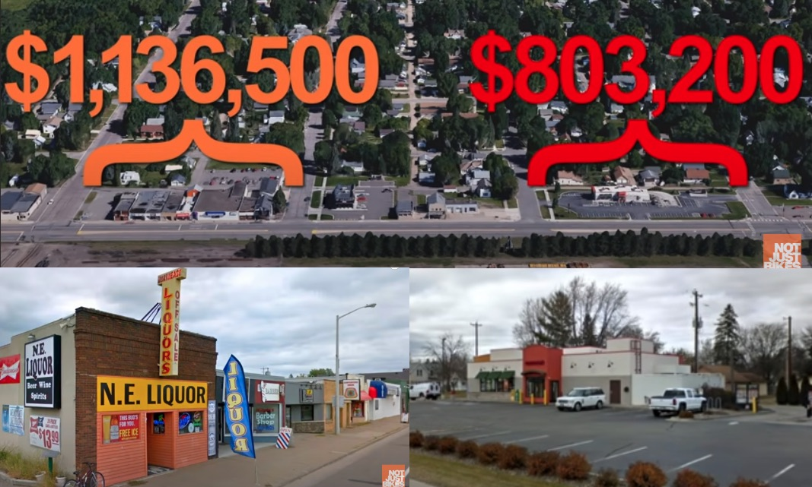

Energy, money, land and lives. Each number below has its source beside it. The pattern is the same in every column: moving a person in a 2-ton vehicle is the most expensive way there is.
Watt-hours to move one person one mile. Lower is better.
Wh per passenger-mile. Source: US DOE Transportation Energy Data Book (Oak Ridge National Laboratory), ch. 2; bikes: CycleVolta; JPods: design figure.
Freight rail moves a ton of goods 470 miles on one gallon of fuel (Warren Buffett, BNSF). A 200-pound person in a 25-mpg car moves a tenth of a ton 25 miles per gallon: 2.5 ton-miles. 470 ÷ 2.5 = 188.
Most of the energy a car burns moves the car, not the person. The Parasitic Energy Ratio compares the mass moved and the stops made per passenger. The smaller the packet, the less energy is wasted.
Stops × vehicle mass per passenger ÷ 90 kg. Lower is better. Method and inputs: library.jpods.com/metrics.
$2.76 trillion a year. 69% of it in cities.
| Cost | $ per year | Source |
|---|---|---|
| Crashes | $871B | NHTSA, via PBS |
| Oil | $756B | EIA |
| Land for roads and parking | $723B | Land Use, at $1 per sq ft |
| Congestion | $305B | CityLab |
| Car damage from bad roads | $109B | CNBC |
| Total | $2.76T |
Walkable places pay the city's bills. Parking lots don't.
Measure a store by what it pays per acre of city land, not per store, and the ranking flips. The big box with its parking lot uses the most land and returns the least.



In Arlington, Virginia, 10% of the land now produces more than half of the county's tax revenue, up from 20% (World Economic Forum). The demand for walkable places is far larger than the supply. The Physical Internet® makes more of them: every station is a new walkable center.
Per 100 million kilometers walked (2016–2018), 11.2 Americans are killed, against 1.1 in the Netherlands and 1.7 in Denmark. Per 100 million kilometers biked, 6.0 against 0.9 and 0.9. The difference is road policy. See how Sweden and Denmark changed it on the home page.
Fatality rates: Ralph Buehler & John Pucher, Transport Reviews 41(1), 2021. Serious injuries: Statista/DOT; ASTM F24 comparison: library.jpods.com/metrics.
Neighborhoods paved for freeways, downtowns turned into parking, and the cities that took their streets back.
{kind=link}
{kind=link}
{kind=link}